유기농업기사 (2017-08-26 기출문제)
1과목: 재배원론
1. 질산 환원 효소의 구성 성분으로 콩과작물의 질소고정에 필요한 무기성분은?
- 몰리브덴
- 철
- 마그네슘
- 규소
(정답률: 54%)

2. 음지 식물의 특성으로 옳은 것은?
- 광보상점이 높다.
- 광을 강하게 받을수록 생장이 좋다.
- 수목 밑에서는 생장이 좋지 않다.
- 광포화점이 낮다.
(정답률: 75%)
3. 다음 중 고온에 의한 작물 생육 저해의 원인이 아닌 것은?
- 유기물의 과잉소모
- 암모니아의 소모
- 철분의 침전
- 증산과다
(정답률: 63%)
4. 토양 수분 항수를 볼 때 강우 또는 충분한 관개 후 2~3일 뒤의 수분 상태를 무엇이라 하는가?
- 포장용수량
- 최대용수량
- 초기위조점
- 영구위조점
(정답률: 80%)
5. 다음 중 수중에서 종자가 발아를 하지 못하는 작물은?
- 벼
- 상추
- 당근
- 콩
(정답률: 46%)
6. 장해형 냉해에 대한 설명으로 옳은 것은?
- 출수기 이후 등숙 기간 동안의 냉온으로 등숙률이 낮아진다.
- 융단조직이 비대해진다.
- 수수 감소 및 출수 지연 등의 장해를 받는다.
- 질소의 다비를 통해 피해를 경감시킬 수 있다.
(정답률: 50%)
7. 다음 중 투명 플라스틱 필름의 멀칭 효과가 아닌 것은?
- 지온상승
- 잡초 발생 억제
- 토양 건조 방지
- 비료의 유실 방지
(정답률: 69%)
8. 우리나라 주요 작물의 기상생태형에서 감온형에 해당하는 것은?
- 그루콩
- 올콩
- 그루조
- 가을메밀
(정답률: 74%)
9. 다음 중 우리나라가 원산지인 작물로만 나열된 것은?
- 벼, 참깨
- 담배, 감자
- 감, 인삼
- 옥수수, 고구마
(정답률: 80%)
10. 다음 중 발아시 호광성 종자 작물로만 짝지어진 것은?
- 호박, 토마토
- 상추, 담배
- 토마토, 가지
- 벼, 오이
(정답률: 64%)
11. 에틸렌의 전구물질에 해당하는 것은?
- tryptophan
- methionine
- acety CoA
- proline
(정답률: 53%)
12. 다음 중 작물 생육에 가장 적합한 토양 구조는?
- 이상구조
- 단립(團粒)구조
- 입단구조
- 혼합구조
(정답률: 84%)
13. 풍해를 받을 때 작물체에 나타나는 생리적 장해로 틀린 것은?
- 호흡의 증대
- 광합성의 감퇴
- 작물체의 건조
- 작물체온의 증가
(정답률: 72%)
14. 등고선에 따라 수로를 내고, 임의의 장소로부터 월류하도록 하는 방법은?
- 보더관개
- 수반관개
- 일류관개
- 고랑관개
(정답률: 58%)
15. 다음 중 작물의 주요온도에서 최적온도가 가장 낮은 작물은?
- 보리
- 완두
- 옥수수
- 벼
(정답률: 65%)
16. 굴광현상에 가장 유효한 광은?
- 적생광
- 자외선
- 청색광
- 적외선
(정답률: 67%)
17. 화곡류 잎의 표피 조직에 침전되어 병에 대한 저항성을 증진시키고 잎을 곧게 지지하는 역할을 하는 원소는?
- 칼륨
- 인
- 칼슘
- 규소
(정답률: 61%)
18. 식물의 진화과정으로 옳은 것은?
- 적응 → 순화 → 도태 → 유전적 변이
- 적응 → 유전적 변이 → 순화 → 도태
- 유전적 변이 → 순화 → 도채 → 적응
- 유전적 변이 → 도태 → 적응 → 순화
(정답률: 64%)
19. 다음 중 작물의 내동성에 대한 설명으로 옳은 것은?
- 포복성이 작물이 직립성보다 약하다.
- 세포내의 당함량이 높으면 내동성이 감소된다.
- 작물의 종류와 품종에 따른 차이는 경미하다.
- 원형질의 수분투과성이 크면 내동성이 증대된다.
(정답률: 77%)
20. 다음 중 적심의 효과가 가장 크게 나타나는 작물은?
- 벼
- 옥수수
- 담배
- 조
(정답률: 53%)
2과목: 토양비옥도 및 관리
21. 토양에서 유기물의 분해에 미치는 요인에 대한 설명으로 틀린 것은?
- 토양이 심한 산성이나 알칼리성이면 유기물의 분해속도가 매우 느리다.
- 혐기조건보다는 호기조건에서 분해가 빨리 일어난다.
- 페놀이 많이 함유되어 있는 유기물이 분해가 빠르다.
- 탄질비가 높은 유기물이 분해가 느리다.
(정답률: 64%)
22. 다음 중 토양 입단구조를 만드는 방법과 거리가 먼 것은?
- 유기물질의 시용
- 염화나트륨의 시용
- 고토의 시용
- 석회의 시용
(정답률: 69%)
23. 토양 유실량이 가장 많은 작부 방법은?
- 잦은 경운
- 소맥연작
- 옥수수연작
- 옥수수ㆍ소맥ㆍ클로버윤작
(정답률: 75%)
24. 토양의 입자밀도가 2.60g/cm3이라 하면 용적밀도가 1.17g/cm3인 토양의 고상의 비율은?
- 40%
- 45%
- 50%
- 55%
(정답률: 59%)
25. 토양용액 중 양이온들의 농도가 모두 일정할 때 다음 중 이액순위가 가장 높은 이온과 가장 낮은 이온으로 짝지어진 것은?
- Mg+2-K+
- H+-Li+
- Ca+2-Mg+2
- H+-Ca+2
(정답률: 53%)
26. 다음 중 토양생성인자로만 나열된 것은?
- 모재, 기후, 지형, 식생, 시간
- 모재, 기후, 지형, 공극률, 시간
- 모재, 미생물, 지형, 식생, 시간
- 유기물, 기후, 지형, 식생, 미생물
(정답률: 80%)
27. 토양 중 수소이온(H+)이 생성되는 원인으로 틀린 것은?
- 탄산과 유기산의 분해에 의한 수소이온생성
- 질산화작용에 의한 수소이온생성
- 교환성염기의 집적에 의한 수소이온생성
- 식물뿌리에 의한 수소이온 방출생성
(정답률: 45%)
28. 치환산도 측정을 위해 수소이온 침출용으로 어떤 용액을 주로 사용하는가?
- KCI
- NaCl
- CaCl2
- MgCl2
(정답률: 68%)
29. 시설재배지 토양의 염류를 낮추는 방법으로 틀린 것은?
- 옥수수를 재배한다.
- 염화칼리를 시용한다.
- 볏짚을 넣고 깊이 갈아준다.
- 담수를 2회 이상 한다.
(정답률: 56%)
30. 화성암을 구성하는 광물이 아닌 것은?
- 석회석
- 감람석
- 각섬석
- 휘석
(정답률: 73%)
31. 다음과 같은 화학적 특성을 가진 토양 중에서 작물생육에 불리한 것은?
- pH 완충력이 큰 토양
- 인산 고정력이 큰 토양
- 양이온교환용량이 큰 토양
- 염기포화도가 큰 토양
(정답률: 59%)
32. 수식(Water Erosion)에 의한 USLE 침식공식 요인이 아닌 것은?
- 토양 침식도
- 경사 길이
- 강우 침식도
- 조도 인자
(정답률: 73%)
33. 다음 특성을 가지는 점토광물은?
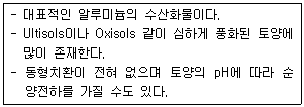
- montmorillonite
- allophane
- hematite
- gibbsite
(정답률: 51%)
34. 정밀토양조사의 목적으로 가장 거리가 먼 것은?
- 농업용수 개발
- 영농계획 수립
- 재배작물 선정
- 토양 개량
(정답률: 72%)
35. 다음에서 설명하는 것은?
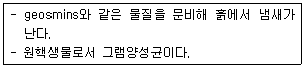
- 방선균
- 세균
- 탈질균
- 조류
(정답률: 74%)
36. 우리나라 토양통을 토지이용 형태 기준으로 구분할 때 토양통 수가 가장 많은 토지이용 형태는?
- 과수원토양
- 밭토양
- 논토양
- 산림토양
(정답률: 64%)
37. 염류나트륨성토양에 대한 내용으로 옳은 것은?
- pH＜8.5, EC＞4 dS/m, ESP＞15, SAR＞13
- pH＞8.5, EC＞4 dS/m, ESP＞15, SAR＞13
- pH＜8.5, EC＞4 dS/m, ESP＜15, SAR＞13
- pH＜8.5, EC＞4 dS/m, ESP＞15, SAR＜13
(정답률: 52%)
38. 다음 중 -3.1 MPa에 해당하는 것은?
- 포화상태
- 포장용수량
- 위조점
- 흡습계수
(정답률: 54%)
39. 토양수분퍼텐셜(Soil watwe potential)의 구성종류가 아닌 것은?
- 중력퍼텐셜
- 압력퍼텐셜
- 부피퍼텐셜
- 삼투퍼텐셜
(정답률: 75%)
40. 토양의 단면 중 점토 및 양분이 가장 많이 용탈되는 층과 집적되는 층은?
- O층과 A층
- A층과 B층
- B층과 C층
- C층과 R층
(정답률: 63%)
3과목: 유기농업개론
41. 녹체춘화형 식물에 해당하는 것은?
- 양배추
- 완두
- 잠두
- 봄올무
(정답률: 70%)
42. 수경재배의 특징으로 틀린 것은?
- 자원을 절약하고 환경을 보존한다.
- 근권환경이 단수하여 관리하기가 쉽다.
- 재배관리의 생력화와 자동화가 편리하다.
- 양액의 완충능력이 강하다.
(정답률: 60%)
43. 고형배지경이면서 유기배지경에 해당되지 않는 것은?
- 훈탄경
- 코코넛 코이어경
- 암면경
- 피트
(정답률: 46%)
44. 다음 중 저위도지대에서 재배해야하는 벼 기상생태형으로 가장 옳은 것은?
- blt형
- blT형
- bLt형
- Blt형
(정답률: 55%)
45. 다음에서 설명하는 것은?
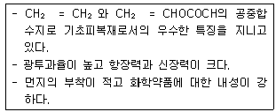
- 에틸렌아세트산비닐
- 경질폴리염화비닐필름
- 불소수지필름
- 경질폴리에스테르필름
(정답률: 43%)
46. 친환경관련법에서 유기축산물의 축사 조건으로 틀린 것은?
- 음수는 접근이 용이할 것
- 영양상태를 조절하기 위해 사료와 거리를 둘 것
- 충분한 자연환기와 햇빛이 제공 될수 있을 것
- 공기순환, 온도ㆍ슨도, 먼지 및 가스농도가 가축건강에 유해하지 아니한 수준 이내로 유지되어야 하고, 건축물은 적절한 단열ㆍ환기시설을 갖출
(정답률: 74%)
47. 다년생 작물에 해당하는 것은?
- 옥수수
- 사탕무
- 무
- 아스파라거스
(정답률: 65%)
48. 골타기를 하고 종자를 줄지어 뿌리는 방법이며, 맥류처럼 개체가 차지하는 평면공간이 넓지 않은 작물에 적용하는 것은?
- 산파
- 점파
- 조파
- 적파
(정답률: 62%)
49. 지력을 토대로 자연의 물질순환 원리에 따르는 농업은?
- 생태농업
- 저투입 지속적 농업
- 정밀농업
- 자연농업
(정답률: 73%)
50. 식물의 일장감응형에서 LL식물에 해당하는 것은?
- 고추
- 메밀
- 시금치
- 토마토
(정답률: 56%)
51. F2~F4 세대에는 매세대 모든 개체로부터 1립씩 채종하여 집단재배를 하고 F4 각 개채별로 F5 계통재배를 하는 것은?
- 여교배육종
- 파생계통육종
- 1개체 1계통육종
- 단순순환선발
(정답률: 74%)
52. 다음 중 C4 식물의 광합성 적정온도로 가장 적절한 것은?
- 30~47℃
- 22~28℃
- 13~20℃
- 5~11℃
(정답률: 60%)
53. 작물의 적산온도가 1700~2300℃에 해당하는 것은?
- 벼
- 추파맥류
- 담배
- 메밀
(정답률: 58%)
54. 유기축산물 유기배합사료 제조용 물질 중 “천연에서 유래한 것일 것”에 해당하는 단미사료는?
- 골분
- 해조분
- 패분
- 우지
(정답률: 66%)
55. 다음에서 설명하는 것은?
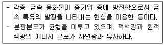
- 형광등
- 수은등
- 메탈할라이드등
- 고압나트륨등
(정답률: 70%)
56. 배낭을 만들지 않고 포자체의 조직세포가 직접 배를 형성하는 것은?
- 위수정생식
- 영양번식
- 무포자생식
- 부정배형성
(정답률: 62%)
57. 식물집단에서 무작위 교배가 이루어지고, 돌연변이와 자연 선택 및 개체의 이주가 일어나지 않으며, 각 개체의 생존율과 번식률이 동등할 때 그 집단은 유전적 평형을 유지하게 되는데, 이를 무슨 법칙이라고 하는가?
- 연관의 법칙
- 엔트로피의 법칙
- 멘델의 법칙
- Hardy-weinberg 법칙
(정답률: 68%)
58. 웅성불임성을 이용하는 것은?
- 고추
- 무
- 배추
- 브로콜리
(정답률: 54%)
59. 저온처리의 감응부위는?
- 줄기
- 노엽
- 뿌리
- 생장점
(정답률: 78%)
60. 타식성 작물로만 나열된 것은?
- 밀, 보리
- 콩, 완두
- 딸기, 양파
- 토마토, 가지
(정답률: 51%)
4과목: 유기식품 가공.유통론
61. 가열살균에 대한 설명으로 틀린 것은?
- 지방함량이 많아질수록 포자를 죽이는데 장시간이 소요되는 경향이 있다.
- 식품 중 소금의 농도가 증가할수록 포자의 내열성이 점차 줄어드는 경향이 있다.
- 식품의 pH가 알칼리성이 될수록 저온에서 가열살균하는 것이 좋다.
- 가열 시 습열이나 건열에 따라 살균 온도와 시간이 차이가 나게 된다.
(정답률: 56%)
62. GMO(유전자변형생물체, 유전자변형농산물)의 기술이 재래의 품종개량 기술과 다른점은 무엇인가?
- 특정목적 유전자만을 선택하여 재조합한다는 것
- 유전자를 변형 대상으로 삼았다는 것
- 분자생물학 기술을 이용하였다는 것
- 살아있는 생물을 대상으로 한다는 것
(정답률: 61%)
63. 30%의 가용성 고형분을 가진 과실 200g을 1L의 물로 추출하고자 한다. 평형이 이루어졌을 때 고실과 물 혼합액의 가용성 고형분 함량은?
- 5%
- 10%
- 15%
- 20%
(정답률: 36%)
64. 생유(원유)는 원래 무균임에도 살균공정이 필요한 이유가 아닌 것은?
- 균질화시켜야 하기 때문
- 착유자의 의복에 의해 오염될 수 있기 때문
- 생유는 주변의 냄새를 빨아들이는 성질이 있기 때문
- 착유도구의 위생 상태에 의해 세균이 증식할 수 있기 때문
(정답률: 56%)
65. 다음 중 병조림의 장점이 아닌 것은?
- 내용물을 볼 수 있다.
- 기체 및 수분 통과가 불가능 하다.
- 급냉에 강하다
- 화학적 반응에 안정적이다.
(정답률: 64%)
66. 식품의 원료 관리, 제조, 가공, 조리, 소분, 유통, 판매의 모든 과정에서 위해한 물질이 식품에 섞이거나 오염되는 것을 방지하기 위하여 각 과정을 중점적으로 관리하는 기준을 무엇이라 하는가?
- HACCP
- SSOP
- GMP
- GAP
(정답률: 83%)
67. 농산물 산지 유통시설을 개선하는 조치에 해당하는 것은?
- 청과물 주산단지 종합유통시설 설치
- 증매인 표준소득율 인하
- 농산물 안정기금 설치
- 쌀 매매업을 신고제로 전환
(정답률: 75%)
68. 효과적인 마케팅 전략을 수립하기 위한 핵심요소(4P)는?
- Product-Price-Place-People
- Product-Price-Process-Promotion
- Product-Price-Place-Promotion
- Product-Price-Place-Physical Evidence
(정답률: 75%)
69. 유기가공식품의 제조ㆍ가공에 사용이 부적절한 여과법은?
- 마이크로여과
- 감압여과
- 역삼투압여과
- 가압여과
(정답률: 66%)
70. 샐러드오일 제조 시 고융점 유지인 스테아린을 제거하기 위해 사용하는 공정은?
- 탈납(dewaxing)
- 동유처리(winterization)
- 용매분별(solvent fractionation)
- 경화처리(hydrogenation)
(정답률: 60%)
71. 유기농 감귤을 유통하는 과정에서 발생할 수 있는 물리적 위험은?
- 오렌지의 수입 금증에 따른 유기농 감귤 가격 하락
- 소비자 기호 변화에 따른 유기농 감귤 소비 감소
- 태풍 및 집중호우에 따른 유기농 감귤 파손율 증가
- 급격한 경제상황 악화에 따른 유기농 감귤 시장 축소
(정답률: 73%)
72. 현재의 유기식품에 대해 흥미와 관심이 적은 무관심 수요의 경우 대응할 수 있는 마케팅관리 유형은?
- 전환 마케팅
- 재성장 마케팅
- 유지 마케팅
- 자극 마케팅
(정답률: 73%)
73. 다음 중 진공포장에 적합한 식품은?
- 과일
- 채소
- 버섯
- 과자
(정답률: 74%)
74. 유기식품의 저장과 운송에 대한 설명으로 틀린 것은?
- 유기제품과 비유기제품이 섞이지 않게 조심한다.
- 유기농법에서 허용되지 않는 물질과 접촉되지 않도록 한다.
- 제품 중 일부만 인증되는 경우 별도로 저장, 취급해야 된다.
- 유기제품을 벌크(bulk)로 저장할 경우는 표시를 별도로 하지 않아도 된다.
(정답률: 80%)
75. 식품위생법령에 근거하여 식품 영업에 종사하지 못하는 질병의 종류가 아닌 것은?
- 감염성 결핵
- 장출혈성대장균감염증
- 세균성이질
- 유행성이하선염
(정답률: 65%)
76. 유기식품 가공시설에서 세척제로 적당하지 않은 것은?
- 황산
- DDT
- 에탄올
- 차아염소산나트륨제제
(정답률: 67%)
77. 고온고압(121℃) 살균 시 가장 관심을 가지는 것은 다음 중 어느 것의 생존 유무인가?
- bacterial endospore
- Mycobacterium tuberculosis
- vegetative cells
- mold spore
(정답률: 52%)
78. 다음 중 발열이 거의 없는 감염병은?
- 세균성 이질
- 장티푸스
- 콜레라
- 파라티푸스
(정답률: 46%)
79. 유통마진에 대한 설명으로 틀린 것은?
- 소비자가 지분한 가격과 생산자가 수취한 가격의 차이이다.
- 농산물의 중간유통 과정에서 발생하는 효용부가활동과 기능에 대한 비용에서 이윤을 제외한 금액이다.
- 유통마진율은 소비자지불가격 중에서 유통마진이 차지하는 비율이다.
- 측정하는 방법으로는 마케팅빌, 지불수취가격차가 있다.
(정답률: 60%)
80. 유기가공식품의 식품첨가물 및 가공보조제로 모두 사용이 가능한 허용물질은?
- 구연산
- 과산화수소
- 규조토
- 수산화칼륨
(정답률: 61%)
5과목: 유기농업관련 규정
81. 유기식품등의 인증기준 등에서 유기축산물 사료 및 영양관리의 구비요건으로 틀린 것은?
- 예외사항을 제외하고 유기가축에는 100퍼센트 유기사료를 급여하는 것을 원칙으로 할 것
- 유전자변형농산물 또는 유전자변형농산물에서 유래한 물질은 급여하지 아니할 것
- 반추가축에게 사일리지(silage)만 급여할 것
- 합성화합물 등 금지물질을 사료에 첨가하거나 가축에 급여하지 아니할 것
(정답률: 73%)
82. 친환경관련법상 인증품 사후관리 조사요령에서 유통과정조사에 대한 내용으로 틀린 것은?
- 조사주기는 등록된 유통업체 중 조사 필요성이 있는 업체를 대상으로 연 1회 이상 자체조사계획을 수립하여 실시한다.
- 사무소장은 인증품 판매장ㆍ취급작업장을 방문하여 인증품의 유통과정조사를 실시한다.
- 사무소장은 전년도 조사업체 내역, 인증품 유통실태 조사 등을 통해 관내 인증품 유통업체 목록을 인증관리 정보시스템에 등록ㆍ관리한다.
- 조사시기는 가급적 인증품의 유통물량이 많은 시기에 실시하고 최근 1년 이내에 행정처분을 받았거나 인증품 부정유통으로 적발된 업체가 인증품을 취급하는 경우 1년 이내에 유통과정 조사를 실시한다.
(정답률: 46%)
83. 친환경관련법상 유기농축산물의 함량에 따른 제한적 유기표시의 기준에서 특정 원재료로 유기농축산물을 사용한 제품에 대한 설명으로 틀린 것은?
- 특정 원재료로 유기농축산물만을 사용한 제품이어야 한다.
- 표시장소는 원재료명 및 함량 표시란에만 표시할 수 있다.
- 해당 원재료명의 일부로 “유기”라는 용어를 표시할 수 없다.
- 원재료명 및 함량 표시란에 유기농축산물의 총함량 또는 원료별 함량을 백분율(%)로 표시하여야 한다.
(정답률: 70%)
84. 친환경관련법상 인증심사 일반에서 인증심사원의 지정에 대한 내용이다. 다음 내용 중 틀린 것은?
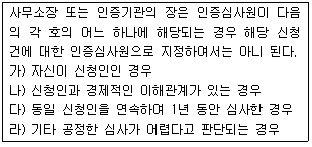
- 가)
- 나)
- 다)
- 라)
(정답률: 69%)
85. 친환경관련법상 유기식품등에 사용가능한 물질에서 토양개량과 작물생육을 위하여 사용이 가능한 물질 중 짚, 왕겨, 산야초가 있다. 짚, 왕겨, 산야초의 사용가능 조건은?
- 충분한 발효와 희석을 거쳐 사용할 것
- 6개월 이상 발효된 것일 것
- 50℃ 이상에서 7일 이상 발효된 것
- 비료화하여 사용할 경우에는 화학물질 첨가나 화학적 제조공정을 거치지 않을 것
(정답률: 55%)
86. 친환경관련법상 유기식품등의 인증기준 등의 유기축산물에서 운송ㆍ도축ㆍ가공 과정의 품질관리의 구비요건에 대한 내용이다. 괄호 안에 알맞은 내용은?
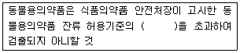
- 2분의 1
- 5분의 1
- 10분의 1
- 20분의 1
(정답률: 61%)
87. 친환경관련법상 ( 가 )에 알맞은 내용은?
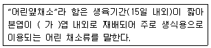
- 1
- 4
- 7
- 9
(정답률: 69%)
88. 친환경관련법상 유기농업자재 관련 행정처분 기준에서 시험연구기관으로 지정받은 후 정당한 사유 없이 1년 이내에 지정받은 시험항목에 대한 시험업무를 시작하지 아니하거나 계속하여 2년 이상 업무 실적이 없는 경우, 2회 위반 시 행정처분은?
- 업무정지 1개월
- 업무정지 3개월
- 업무정지 6개월
- 지정취소
(정답률: 17%)
89. 유기식품의 생산ㆍ가공ㆍ표시ㆍ유통에 관한 Codex 가이드라인의 목적으로 부적합한 것은?
- 시장에서 일어나는 기만과 부정행위 그리고 입증되지 않은 제품의 강조표시로부터 소비자를 보호하기 위함
- 비유기 제품이 유기제품으로 잘못 표시되는 것으로부터 유기제품 생산자를 보호하기 위함
- 생산, 준비, 저장, 운송, 유통 중 2가지만 임의로 선택하여 가이드라인에 따라 검사되고 부합하게 하기 위함
- 유기적으로 재배된 제품의 생산, 인증, 확인, 표시 규정을 조화시키기 위함
(정답률: 67%)
90. 친환경관련법상 유기식품등의 인증기준 등의 용어에 대한 설명으로 틀린 것은?
- “휴약 기간”이란 사육되는 가축에 대하여 그 생산물이 식용으로 사용하기 전에 동물용 의약품을 사용할 수 있는 일정기간을 말한다.
- “윤작”이란 동일한 재배포장에서 동일한 작물을 연이어 재배하지 아니하고, 서로 다른 종류의 작물을 순차적으로 조합ㆍ배열하는 방식의 작부체계를 말한다.
- “유기사료”란 비식용유기가공품 인증기준에 맞게 재배ㆍ생산된 사료를 말한다.
- “동물용의약품”이란 동물질병의 예방ㆍ치료 및 진단을 위하여 사용하는 의약품을 말한다.
(정답률: 66%)
91. 유기식품의 생산ㆍ가공ㆍ표시ㆍ유통에 관한 Codex 가이드라인에 따른 식물 해충 및 질병관리를 위한 물질 중 “자연산인 경우”에 해당하는 것은?
- 레시틴
- 천연 산(식초)
- 키틴질 살선충(殺線蟲)제
- 표고버섯(Shiitake fungus) 추출물
(정답률: 39%)
92. 친환경관련법상 무농약농산물등의 인증기준에서 무항생제축산물 전환기간 구비요건에 대한 내용이다. 괄호 안에 알맞은 내용은?
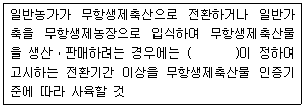
- 농촌진흥청장
- 식약처장
- 국립생태원장
- 국립농산물품질관리원장
(정답률: 68%)
93. 다음은 친환경관련법상 허용물질의 선정 기준 및 절차에서 허용물질의 신규 선정, 개정 또는 폐지 절차에 관한 사항이다. 괄호 안에 알맞은 내용은?
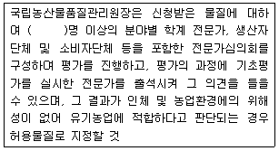
- 3
- 7
- 9
- 12
(정답률: 73%)
94. 유기농업자재의 공시 기준에서 식물에 대한 시험성적서에 대한 내용이다. 괄호 안에 알맞은 내용은?
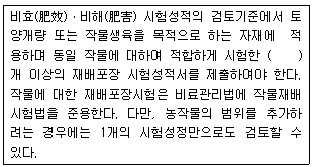
- 2
- 4
- 5
- 8
(정답률: 70%)
95. 친환경관련법상 수입 비식용유기가공품(유기사료)의 적합성조사 방법 중 정밀검사에 대한 내용이다. ( 가 )에 알맞은 내용은?
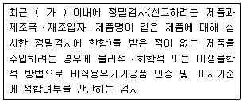
- 1년
- 2년
- 3년
- 4년
(정답률: 63%)
96. 친환경관련법상 인증심사원의 자격 취소 및 정지기준의 개별기준에서 인증심사 업무와 관련하여 다른 사람에게 자기의 성명을 사용하게 하거나 인증심사원증을 빌려 준 경우, 1회 위반시 행정처분은?
- 자격정지 3개월
- 자격정지 6개월
- 자격정지 1년
- 자격취소
(정답률: 41%)
97. 유기축산물의 사육장 및 사육조건에서 유기가축 1마리당 갖추어야 하는 가축사육시설의 소요면적(단위 : m2)이 있는가, (가)에 알맞은 내용은?
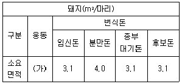
- 3.5
- 8.2
- 10.4
- 45.5
(정답률: 60%)
98. 친환경관련법상 인증번호 부여방법에서 국립농산물품질관리원이 인증한 경우의 인증종류별 번호로 틀린 것은?
- 유기농림산물(1)
- 무농약농산물(3)
- 무항생제축산물(5)
- 수입자(8)
(정답률: 61%)
99. 친환경관련법상 병해충 관리를 위하여 사용이 가능한 물질 중 사용가능 조건이 “물로 추출한 것일 것”에 해당하는 것은?
- 난황(卵黃, 계란노른자 포함)
- 젤라틴(Gelating)
- 식초 등 천연산
- 담배잎차(순수니코틴은 제외)
(정답률: 65%)
100. 유기식품의 생산ㆍ가공ㆍ표시ㆍ유통에 관한 Codex 가이드라인에서 양봉 및 양봉 제품 관리에 대한 내용으로 틀린 것은?
- 여왕벌의 날개 일부를 잘라 주어야 한다.
- 기초 벌집은 유기적으로 생산된 밀랍으로 만들어야 한다.
- 양봉 제품을 수확하기 위하여 벌집 안에 들어 있는 벌을 죽이는 것은 금지된다.
- 양봉으로부터 유래되는 제품을 추출하고 가공할 동안에는 가능한 한 낮은 온도를 유지하는게 좋다.
(정답률: 67%)